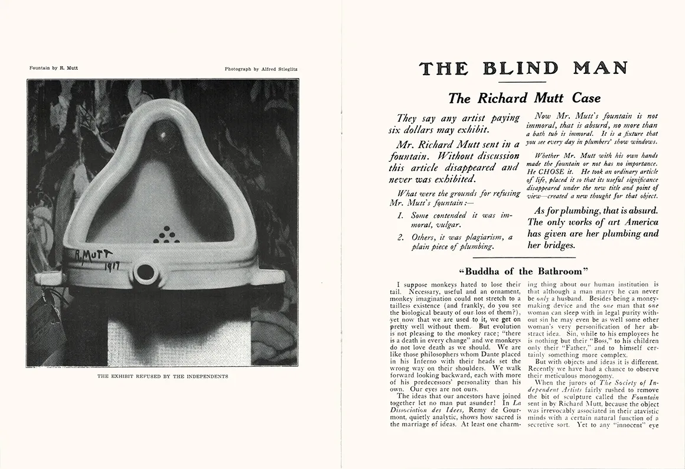
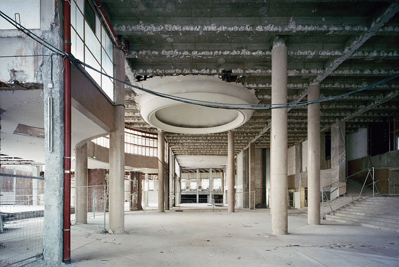
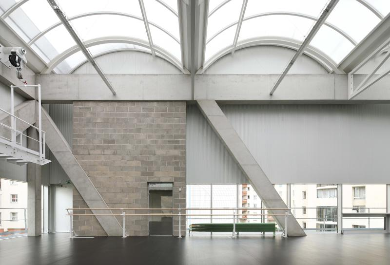

La critique à l'oeuvre critique
Maxime La Goutte
Club ASAP 10
avril 2026
Temps de lecture : 10 min
1. Histoire
En 1917, Richard Mutt, artiste inconnu du grand public, envoi une oeuvre, Fontaine, à la Society of lndependent Artists de New-York, pour leur première exposition annuelle au Grand Central Palace de Manhattan. Ce dernier profite alors de la politique volontairement floue de la Society et de son slogan "No jury, no prizes", qui laisse entendre que puisque n'importe qui peut être un artiste, n'importe qui peut y exposer son art de manière totalement libre.
Seulement, et c'est là que démarre réellement notre histoire, la Society choisie de censurer l'oeuvre de Richard, jugeant qu'un équipement sanitaire ne peut être considéré comme une oeuvre d'art et donc exposé. L'oeuvre est alors perdue, elle disparait et personne ne la reverra. Face à cette éviction, officiellement pour vis de procédure, et donc à la trahison du principe le plus fondamental de la Society, Marcel Duchamp, l'un de ses fondateurs, un an auparavant, et alors président du comité d'accrochage, choisit d'apporter son soutien à Richard en démissionnant.
Dans la foulée Marcel et quelques compères lancent une revue d'art satirique intitulé The Blind Man je vous passe l'interprétation du nom de la revue et de sa première couverture qui invite, pour son deuxième numéro, les lecteurs à envoyer leurs contributions. L'occasion pour Richard de laver son affront est trouvée !
Dans le second numéro parait en effet un article anonyme intitulé The Richard Mutt Case, accompagné d'une photographie de l'objet c'est le cas de le dire du litige. La photo est prise par Alfred Stieglitz, célèbre photographe et galeriste new-yorkais, ce qui donne une certaine légitimité à l'oeuvre. Tout cela finissant de transformer ce cas en un fait accompli.

2. Rencontre et résonances
Plot twist ! Richard et Marcel sont en fait la meme personne.
Fontaine deviendra le ready-made le plus connu du monde, et cela sans que personne ne l'ai jamais vu. Toutes les versions existantes aujourd'hui étant des répliques, son aura tient principalement à la photographie de Stieglitz, énonçant et incarnant, avec 20 ans d'avance sur Walter Benjamin, l'oeuvre d'art à l'époque de sa reproductibilité technique.
Par toute cette intrigue Duchamp critique tout ce qui touche à l'idée d'art*. De la création artistique à sa manifestation, en passant par tous les rouages de ce qui deviendra une industrie bien huilée.
Mais en faisant cette critique, Duchamp pose également les bases pour une nouvelle théorie. Finalement, le ready-made est une oeuvre d'art réduite à l'énoncé ''ceci est de l'art''. C'est un art sur l'art, ou un art à propos de l'art comme disait Duchamp. Ainsi, il introduit la réflexivité dans l'art et ouvre la voie à tous les courants de la seconde moitié du XXème siècle : art minimal, art conceptuel, land art ...
Après Duchamp - et Agam ben ne s'y est pas trompé en nommant l'art contemporain ''art post-Duchamp''** - la critique, la théorie, et donc la pensée, peuvent être incarnée à même l'oeuvre.
* voir : Thierry de Duve, Résonances du readymade, Paris, Pluriel, 2006
** Giorgio Agam ben, Création et anarchie, l'oeuvre à l'âge de la religion capitaliste, Paris, Rivages, 2019
Quand Robert Smithson dépose quelques tas de cailloux à même le sol d'un musée, il contribue à la critique du fait que n'importe quoi exposé à l'intérieur de ce genre d'institution devient oeuvre d'art.
Quand ce même Smithson part au fin fond de l'Utah empiler des cailloux en forme de spirale sur le bord d'un lac, soumettant son oeuvre aux forces de la nature et à l'entropie* , cela participe de cette même critique.
* Gilles A. Tiberghien, Restaurer les oeuvres dans la nature, Éléments de réflexion, Paris, Institut national d'histoire de l'art, 2021
3. Architecture (quand même)
Tout cela est fort sympathique mais, et l'architecture dans tout cela ? Si on peut faire une critique de l'art dans l'art lui-même, on peut surement chercher une critique de l'architecture dans l'architecture elle-même ... Si la critique est l'art de mettre en crise, nous pouvons essayer de regarder quelques réalisations qui semblent faire de même avec notre rapport à l'architecture.
Pas de grande interprétation aujourd'hui, la fin sera ouverte, 5 minutes obligent. Seulement, si on regarde le projet de AjdvivgwA (AgwA + De Vylder Vinck, oups), Chapex à Charleroi, celui de Lacaton & Vassal pour le Palais de Tokyo à Paris, ou celui de Bruther dans le quartier Saint-Blaise toujours à Paris avec un oeil Duchampien, et en ayant en tête que ce qui fait l'oeuvre d'art conceptuel est la traduction littérale de l'idée qui la définit* - l'idée ici étant l'architecture elle-même - nos certitudes vis-à-vis de la finitude du projet, de son hylémorphisme ou de notre rapport aux éléments techniques, entre bien d'autres choses, se fracasse sur le mur immaculé d'Alberto Campo Baeza
* José Capela, "L'architecture pour l'architecture", dans Lacaton et Vassal: mode d'emploi, Porto, Pierrot le Fou, 2014


Si la critique semble préfigurer la théorie, ou c'est en tout cas ce que le ready-made semble nous apprendre, Duchamp nous invite à voir ces deux champs ailleurs que dans ses formes conventionnelles, et notamment écrites. Il nous invite à penser l'architecture, à même la construction.
L'ensemble des articles issus du club asap 10 sont disponibles ci-dessous:
| # | Titre | Auteur | |
|---|---|---|---|
| 100 | Les styles de la critique | Hugo Forté | Club #10 |
| 101 | L'oeuvre critique | Maxime La Goutte | Club #10 |
| 102 | Démanteler le spectre post-critique | Louis Fiolleau | Club #10 |
| 103 | The backrooms, une fiction critique populaire | Titouan Gracia | Club #10 |
| 104 | What you read is what you get | Hugo Forté | Club #10 |
| 105 | Un problème chez ASAP | Herzgeg & Deux Neurones | Club #10 |
| 106 | Tableau nantais d'une critique | Un gars laxique | Club #10 |